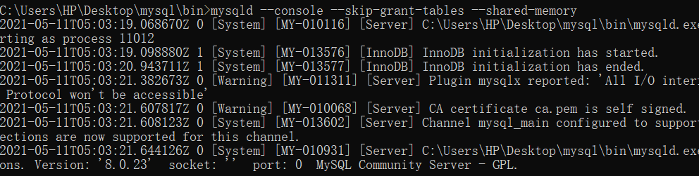

Mysql无密码登录与修改密码
Mysql无密码登录与修改密码
- 打开cmd，cd到mysql安装目录的bin文件夹
- 运行 net stop mysql
- 运行 mysqld —console —skip-grant-tables —shared-memory
- 此时该窗口如图，重新打开一个新的cmd窗口

- 运行 mysql
- 运行 use mysql
- 运行 flush privileges;
- 运行 ALTER user ‘root’@’localhost’ IDENTIFIED BY ‘123456’;
- 运行 flush privileges;
- 运行 exit
- 运行 net start mysql
- 重新登录，mysql -u root -p
本博客所有文章除特别声明外，均采用 CC BY-NC-SA 4.0 许可协议。转载请注明来自 浮生孰来！